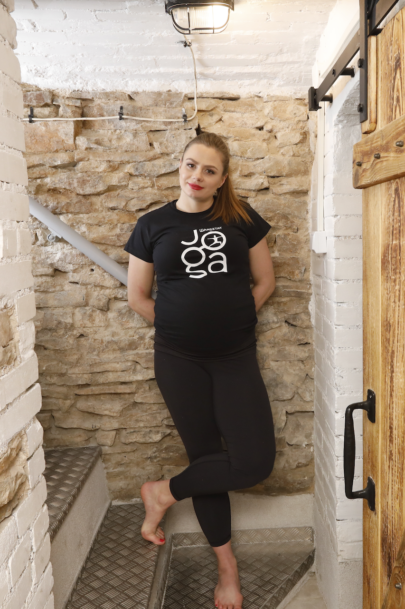

Nazywam się Ewa Kołaczyńska.
Jestem dyplomowanym nauczycielem hatha-jogi.
Certyfikat ukończenia szkolenia nauczycielskiego w OMśrodku hatha-jogi w Warszawie. Szkolenie
prowadzone
przez Iwonę i Leszka Kawa.
Dyplom ukończenia kursu instruktora rekreacji ruchowej ze specjalnościa hatha-joga organizowany
przez
TKKF Toruń pod kierunkiem prof. AWF Janusza Szopy.
Swoją przygodę z jogą rozpoczęłam w 2011 rou, co bardzo wpłynęło na moje życie. Poprzez pracę z
ciałem –
niejednokrotnie trudną i frustrującą nauczyłam się dyscypliny, ale także odpuszczania. Stanęłam na
macie
z ciekawości. Traktując jogę jako kolejną formę sportu. Trenowałam sztuki walki (kick-boxing), dużo
biegałam i zajmowałam się crossfit-em. Trafiłam na zajęcia do OMśrodka hatha-joga w Warszawie. Po
pięciu
latach regularnej praktyki zostałam zapytana czy nie chciałabym uczyć. Zgodziłam się. Zaczęłam
asystować
w zajęciach. Killka miesięcy szkoliłam się pod czujnym okiem Iwony i Leszka Kawa. Po zakończonym
szkoleniu zaczęłam samodzielne prowadzić w OMśrodku zajęcia dla dzieci i dorosłych. W 2017 roku
wróciłam, będąc w zaawansowanej ciąży, do swojego rodzinnego miasta, Starachowic. W 2019 roku
zaczęłam
prowadzić zajęcia w klubie fitness, w przedszkolu oraz zajęcia indywidulane i w niewielkich grupach
w
salonie własnego mieszkania. Zainteresowanie zajęciami jogi okazało się jednak duże więc
wyremontowałam
warsztat w którym pracował mój tata i stworzyłam własną przestrzeń do praktyki jogi. Tak powstał –
Warsztat Joga.